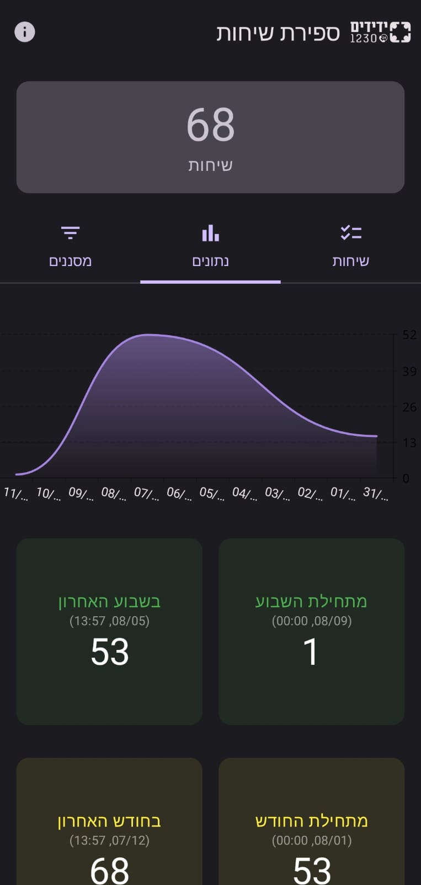

CopyFast
A lightweight, lightning-fast clipboard manager engineered specifically for macOS.
Software Engineer • Researcher • UI/UX Designer
A revolutionary approach to the web - the first browser engine written entirely in pure Python.

An ultra-fast search engine indexing every quote ever spoken in the TV show 'Friends'.
A lightweight, lightning-fast clipboard manager engineered specifically for macOS.

A modern, beautifully designed Android application for tracking kosher waiting times.

A sleek WearOS application delivering quick, accessible prayers directly to your wrist.
A seamless utility for converting Waze location URLs into standard Google Maps links.

Android application to track and count emergency volunteer dispatch calls.

An interactive and engaging music trivia game built with modern web technologies.